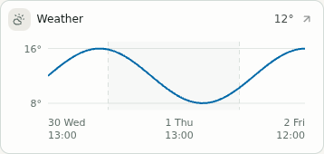
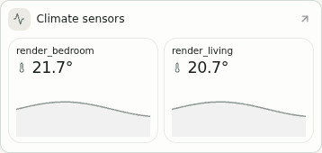
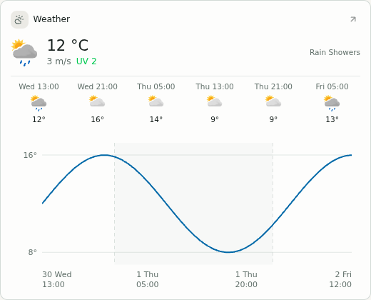
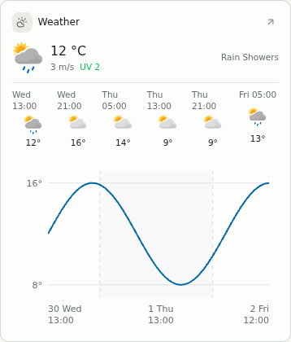

Sensor and weather widget sizing
Implemented 30 September 2026. The charts retain space at smaller heights; forecasts show low/high temperatures and unambiguous day/time labels. Synthetic fixture data, captured in the real application.
170 px weather cards



170 px sensor cards



420 px weather cards



